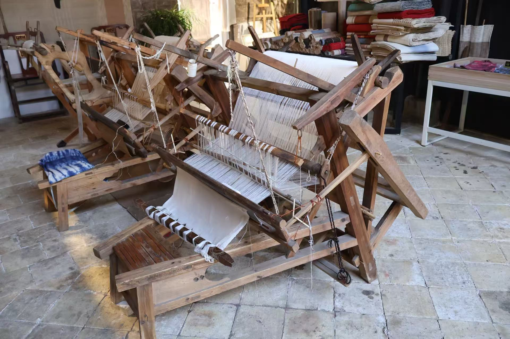

夏布文化

夏布，也称"苎布""生布""鸡鸣布"等，是用苎麻茎皮纤维为原料手工织造而成的一种纺织品，各朝代以"紛""纻""带""苎"来记述它，直到明代的文献资料上才出现"夏布"二字。一说是因为苎麻透气凉爽，适宜夏季衣着，所以叫做"夏布"；另一说其起源于夏朝，故称为夏布。
"古者先布以苎始，棉花至无始入中国，古者无是也。所为布，皆是苎，上自端冕，下论草服。"可见苎麻自古以来就是中国人民主要的衣着原料，被认为是中国传统纺织品的活化石。直到棉花种植技术传入中国并推广开来后，才逐渐取代了麻。但苎麻布并未消失，明末清初，江西地区夏布织造业进入鼎盛时期，与瓷器、纸张齐名，并称为"江西三宝"。在当代，夏布已演变成专指以芯麻为原材料、采用绩麻工艺的一种织物了。
